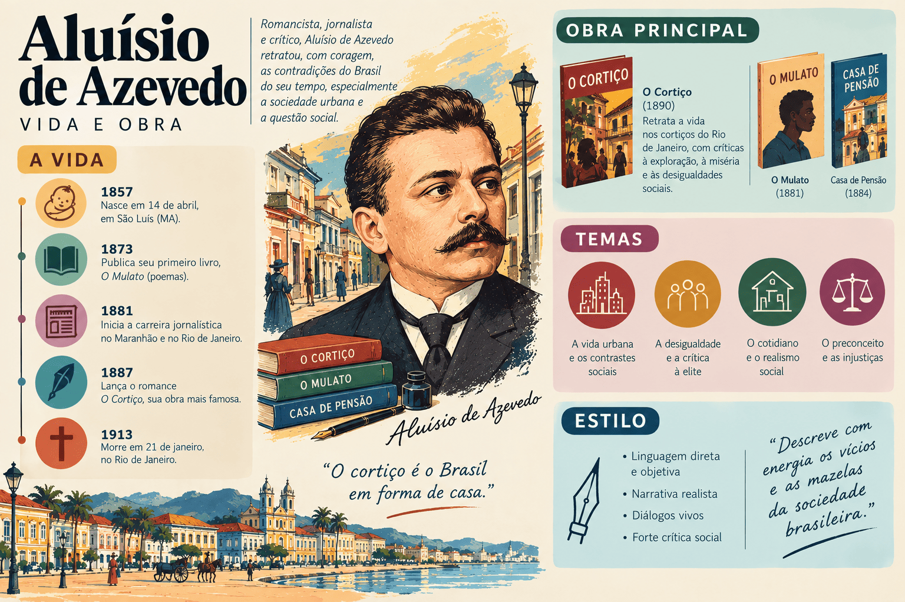

Aluísio Azevedo: biografia, obras, características literárias e legado
Aluísio Azevedo foi romancista, contista, cronista, dramaturgo, caricaturista e diplomata. Considerado o introdutor e principal representante do Naturalismo no Brasil, transformou a ficção nacional ao trazer para o centro do romance os cortiços, as camadas populares, a exploração urbana, o preconceito racial e os condicionamentos biológicos e sociais.
Seu nome completo era Aluísio Tancredo Gonçalves de Azevedo. Nascido em São Luís do Maranhão, em 1857, viveu o período de crise do Segundo Reinado, as campanhas abolicionista e republicana e o crescimento acelerado das habitações coletivas no Rio de Janeiro do final do século XIX.
Com o lançamento de O Mulato, em 1881, inaugurou o movimento naturalista no país, no mesmo ano em que Machado de Assis publicava Memórias Póstumas de Brás Cubas, marco do Realismo na Literatura Brasileira. Posteriormente, consagrou-se com Casa de Pensão (1884) e sua obra-prima absoluta, O Cortiço (1890), leitura indispensável para o ENEM, o PAES UEMA e os principais vestibulares do país.

Aluísio Azevedo em resumo
- Nome completo: Aluísio Tancredo Gonçalves de Azevedo.
- Nascimento: 14 de abril de 1857, em São Luís, Maranhão.
- Falecimento: 21 de janeiro de 1913, em Buenos Aires, Argentina.
- Movimento literário: Naturalismo.
- Gêneros: romance naturalista (romance de tese), romance folhetinesco, crônica, conto, teatro e caricatura.
- Marco inaugural do Naturalismo: O Mulato, publicado em 1881.
- Principais romances: O Mulato (1881), Casa de Pensão (1884) e O Cortiço (1890).
- Instituição: fundador da Cadeira nº 4 da Academia Brasileira de Letras (patrono: Basílio da Gama).
- Estilo: linguagem objetiva e sensorial, determinismo científico, zoomorfização, foco na coletividade e denúncia social.
Quem foi Aluísio Azevedo?
Aluísio Azevedo nasceu em 14 de abril de 1857, em São Luís do Maranhão, cidade que no século XIX ostentava intensa vida cultural e jornalística, sendo conhecida como a "Atenas Brasileira". Era filho do vice-cônsul português David Gonçalves de Azevedo e de Emília Amália Pinto de Magalhães, além de irmão mais novo do célebre dramaturgo e jornalista Artur Azevedo.
Desde a juventude demonstrou inclinação para o desenho, a pintura e as letras. Em 1876, mudou-se para o Rio de Janeiro, onde se matriculou na Imperial Academia de Belas Artes e passou a atuar como caricaturista e chargista político em periódicos ilustrados como O Fígaro, O Mequetrefe, Zig-Zag e A Comédia Popular.
O olhar treinado na caricatura — atento aos gestos, aos traços físicos marcantes e aos contrastes sociais da rua — exerceu papel decisivo na construção visual e plástica de sua futura prosa de ficção.
São Luís do Maranhão e o impacto de O Mulato (1881)
Em 1878, com o falecimento de seu pai, Aluísio Azevedo retornou a São Luís para auxiliar no sustento da família. Na capital maranhense, lançou seu primeiro romance, Uma Lágrima de Mulher (1879), ainda de feição ultrarromântica, e engajou-se na imprensa anticlerical e abolicionista, colaborando no jornal A Pacotilha e fundando o periódico O Pensador.
Em 1881, publicou em São Luís o romance O Mulato. A obra provocou profundo escândalo na sociedade conservadora maranhense ao atacar abertamente o racismo hipócrita da elite escravista e a corrupção moral do clero católico. Ao mesmo tempo em que enfrentou hostilidade local, o livro foi recebido com entusiasmo na Corte, projetando Aluísio como o inaugurador do Naturalismo no Brasil.
O escritor profissional e a carreira diplomática
De volta ao Rio de Janeiro em 1881, Aluísio Azevedo tomou uma decisão rara no século XIX: viver exclusivamente da pena. Durante quase quinze anos, sustentou-se com a publicação ininterrupta de folhetins em jornais, peças teatrais (muitas em parceria com o irmão Artur Azevedo) e romances naturalistas cuidadosamente pesquisados.
Em 1895, aprovado em concurso público para a carreira consular, ingressou na diplomacia brasileira e praticamente encerrou sua produção ficcional. Serviu como cônsul em Vigo (Espanha), Yokohama (Japão), La Plata (Argentina), Nápoles (Itália), Assunção (Paraguai) e Buenos Aires, onde faleceu em 21 de janeiro de 1913, aos 55 anos. Em 1897, participou da fundação da Academia Brasileira de Letras como ocupante da Cadeira nº 4.
Contexto histórico e científico da obra de Aluísio Azevedo
A produção naturalista de Aluísio Azevedo desenvolveu-se nas duas últimas décadas do século XIX, período marcado por transformações históricas e pela difusão das teorias cientificistas europeias:
- a crise do sistema escravista e a campanha pela Abolição da Escravatura (1888);
- o desgaste da Monarquia e a Proclamação da República (1889);
- o crescimento demográfico do Rio de Janeiro, a especulação imobiliária e a proliferação dos cortiços e estalagens populares;
- o Positivismo de Auguste Comte, que valorizava a observação empírica e as ciências naturais;
- o Evolucionismo de Charles Darwin, aplicado à vida social por meio da noção de "seleção natural" e vitória do mais forte;
- o Determinismo de Hippolyte Taine, segundo o qual o comportamento humano é determinado por três fatores: a raça (hereditariedade biológica), o meio (ambiente físico e social) e o momento histórico;
- a influência direta do "Romance Experimental" do francês Émile Zola e do realismo-naturalismo do português Eça de Queirós.
Ponto importante: Para o escritor naturalista, o romance deveria funcionar como um laboratório científico. O autor observa as personagens submetidas a determinadas condições de meio e sangue para comprovar uma tese sobre as patologias sociais e o comportamento humano.
Características literárias de Aluísio Azevedo
A escrita naturalista de Aluísio Azevedo reúne rigor descritivo, plasticidade visual e contundência crítica:
- Determinismo biológico e ambiental: as personagens não agem por livre-arbítrio absoluto, mas impulsionadas pelos instintos fisiológicos, pela herança sanguínea e pela pressão corruptora do ambiente em que vivem.
- Zoomorfização (animalização): o ser humano é reduzido à sua dimensão biológica e comparado constantemente a animais (vermes, cães, touros, serpentes, formigas), destacando a força dos instintos de sobrevivência, fome e reprodução.
- Protagonismo coletivo: especialmente em O Cortiço, mais importante do que um herói individual é o próprio agrupamento humano, retratado como um organismo vivo que nasce, cresce, fermenta e se multiplica.
- Romance de tese: a narrativa busca demonstrar cientificamente uma premissa (como a influência destrutiva do meio tropical e promíscuo sobre o caráter europeu ou o peso da tara hereditária).
- Foco nas camadas populares e marginalizadas: lavadeiras, operários de pedreira, imigrantes pobres, escravizados, prostitutas e capoeiras ganham voz e presença central na literatura brasileira.
- Sensualidade e patologias sociais: abordagem franca do desejo sexual, do adultério, da histeria, do alcoolismo, da exploração do trabalho e da violência urbana.
- Linguagem sensorial, plástica e dinâmica: descrições ricas em cores, cheiros, sons e movimentos de massa, aliadas a diálogos vivos que captam o falar popular e o sotaque dos imigrantes portugueses.
As duas vertentes da ficção de Aluísio Azevedo
Para sobreviver financeiramente como escritor profissional no Brasil do século XIX, Aluísio Azevedo dividiu sua produção em duas linhas distintas: os romances folhetinescos (escritos ao gosto do grande público leitor de jornais, com tramas melodramáticas e sentimentais) e os romances naturalistas (obras de ambição estética e científica).
| Aspecto | Vertente Folhetinesca (Romântica) | Vertente Naturalista (Realista-Científica) |
|---|---|---|
| Objetivo principal | Entretenimento popular e sustento financeiro imediato nos jornais. | Investigação social, comprovação de teses deterministas e renovação artística. |
| Construção narrativa | Aventuras rocambolescas, mistérios, paixões idealizadas e reviravoltas melodramáticas. | Observação documental do cotidiano, análise fisiológica e determinismo do meio. |
| Obras representativas | Uma Lágrima de Mulher (1879), Mistérios da Tijuca (1882), Filomena Borges (1884). | O Mulato (1881), Casa de Pensão (1884), O Homem (1887), O Cortiço (1890). |
Principais romances de Aluísio Azevedo
| Obra | Ano | Eixo temático e importância |
|---|---|---|
| Uma Lágrima de Mulher | 1879 | Romance de estreia, ainda vinculado à estética sentimental do Romantismo. |
| O Mulato | 1881 | Marco inaugural do Naturalismo no Brasil; denuncia o racismo e o clericalismo em São Luís. |
| Casa de Pensão | 1884 | Inspirado em um crime real na Corte; analisa a corrupção do estudante provinciano pelo meio urbano. |
| O Homem | 1887 | Estudo patológico centrado na histeria feminina e na repressão dos instintos sexuais. |
| O Cortiço | 1890 | Obra-prima do Naturalismo brasileiro; analisa a habitação coletiva, a cobiça capitalista e o meio tropical. |
| O Coruja | 1890 | Contraste psicológico e social entre a lealdade ingênua e o arrivismo na vida carioca. |
| Livro de uma Sogra | 1895 | Último romance publicado pelo autor, discutindo o casamento sob ótica desencantada. |
O Mulato (1881)
Ambientado na São Luís do Maranhão da década de 1870, o romance narra a tragédia de Raimundo, jovem culto, bonito e formado em Direito na Europa, que retorna à capital maranhense para liquidar a herança paterna sem saber a verdade sobre sua origem: ele é filho de seu pai branco, José Pedro da Silva, com a escravizada Domingas.
Raimundo apaixona-se por sua prima Ana Rosa e é correspondido. No entanto, o casamento é impedido pelo preconceito racial da família e pelas intrigas do vilão Cônego Diogo, sacerdote corrupto que no passado assassinara o pai de Raimundo. No desfecho trágico, Raimundo é assassinado por Dias (pretendente branco protegido pelo padre), e Ana Rosa, anos depois, submete-se às convenções sociais e casa-se com o próprio assassino de seu amado.
Embora ainda conserve certos traços românticos na idealização do protagonista, O Mulato inaugura o Naturalismo brasileiro pela descrição anticlerical feroz, pela crítica implacável à sociedade escravista maranhense e pela abordagem fisiológica do desejo de Ana Rosa.
Casa de Pensão (1884)
Inspirado em um rumoroso processo judicial ocorrido no Rio de Janeiro em 1876 (a chamada "Questão Capistrano"), o romance acompanha Amâncio de Vasconcelos, jovem maranhense rico e de saúde frágil que viaja à Corte para estudar Medicina.
Hospedado na pensão administrada pelo calculista João Coqueiro e por sua esposa Madame Brizard, Amâncio é progressivamente corrompido pela boemia carioca e cai na armadilha da família, que tenta forçá-lo a casar-se com Amélia, irmã de Coqueiro, para apoderar-se de sua fortuna. Absolvido no tribunal da acusação de defloramento, Amâncio acaba assassinado por Coqueiro em um quarto de hotel. A obra demonstra a tese determinista de que o meio urbano corrupto destrói o indivíduo moralmente vulnerável.
O Cortiço (1890)
Considerado o ponto mais alto do Naturalismo em língua portuguesa, O Cortiço tem como verdadeiro protagonista a própria estalagem de São Romão, situada no bairro de Botafogo, no Rio de Janeiro. O cortiço é descrito como uma criatura viva e voraz que condiciona o destino de todos os seus moradores.
A narrativa articula grandes núcleos que exemplificam as leis do determinismo e da acumulação capitalista selvagem:
- João Romão e Bertoleza: o taverneiro português João Romão personifica a ambição desmedida. Para enriquecer, falsifica a carta de alforria da escravizada Bertoleza e explora seu trabalho exaustivo de sol a sol. Quando ascende à alta burguesia e decide casar-se com a filha do Barão de Freixal, entrega Bertoleza aos antigos donos; em gesto desesperado de resistência, ela comete suicídio abrindo o próprio ventre com uma faca de cortar bacalhau.
- João Romão vs. Miranda: a disputa por espaço e prestígio entre o vendeiro embrutecido e seu vizinho, o comerciante português Miranda (que recebe o título de Barão), retrata as diferentes fases do capitalismo predador e a falsidade moral da elite.
- Jerônimo e Rita Baiana (a tese do meio tropical): o cavouqueiro português Jerônimo, inicialmente trabalhador, metódico e fiel à esposa Piedade de Jesus, sofre um processo de "abrasileiramento" sob a ação do sol tropical, do café forte, da cachaça, da música e da sensualidade da mulata Rita Baiana. Dominado pelo instinto, mata o rival Firmo, abandona a família e entrega-se à indolência, enquanto sua filha Pombinha, corrompida pelo ambiente do cortiço, acaba levada à prostituição ao lado de Léonie.
Aluísio Azevedo e Machado de Assis: Naturalismo vs. Realismo
Contemporâneos e atuantes na mesma cidade do Rio de Janeiro, Aluísio Azevedo e Machado de Assis lideraram as duas vertentes realistas do final do século XIX. O quadro abaixo sintetiza as diferenças fundamentais entre o método de cada autor:
| Critério | Aluísio Azevedo (Naturalismo) | Machado de Assis (Realismo Psicológico) |
|---|---|---|
| Foco de análise | O exterior, o comportamento coletivo, os instintos biológicos e a pressão do meio. | O interior da consciência, as motivações ocultas, a vaidade e a ambiguidade moral. |
| Espaço social | Cortiços, estalagens, pedreiras, pensões e províncias marcadas pela segregação. | Salões burgueses, gabinetes políticos e residências das classes abastadas da Corte. |
| Visão da ciência | Adesão às teses deterministas, evolucionistas e fisiológicas do século XIX. | Ceticismo irônico e sátira às doutrinas científicas dogmáticas (como em "O Alienista" e no Humanitismo). |
| Construção das personagens | Zoomorfização e redução dos indivíduos às leis da natureza e da hereditariedade. | Complexidade psicológica, dissimulação social e narradores parciais ou não confiáveis. |
| Linguagem | Descritiva, plástica, sensorial, direta e com registro farto da oralidade popular. | Sutil, elíptica, irônica, digressiva e marcada pelo diálogo constante com o leitor. |
Leitura crítica contemporânea: Ao estudar O Cortiço e O Mulato, é fundamental distinguir o valor documental e denunciatório da obra de Aluísio Azevedo das teorias científicas racistas e deterministas do século XIX (como a ideia de que o clima tropical e a mestiçagem levam necessariamente à preguiça ou à degeneração moral). Tais teorias estão historicamente superadas pela ciência moderna, mas eram o instrumental teórico utilizado pelos naturalistas da época.
Trechos famosos e seus significados
- “E naquela terra encharcada e fumegante, naquela umidade quente e lodosa, começou a minhocar, a esfervilhar, a crescer, um mundo, uma coisa viva, uma geração, que parecia brotar espontânea, ali mesmo, daquele lameiro, e multiplicar-se como larvas no esterco.” — passagem célebre de O Cortiço que sintetiza a zoomorfização dos moradores e a personificação do próprio cortiço como organismo biológico.
- “Naquela mulata estava o grande mistério, a síntese das impressões que ele recebeu chegando aqui: ela era a luz ardente do meio-dia; ela era o calor vermelho das sestas da fazenda...” — trecho de O Cortiço em que Rita Baiana é associada diretamente às forças da natureza tropical que seduzem e transformam o português Jerônimo.
- “— Fazes mal em vir a esta casa!... Não te fica bem!... Sabes que a gente tem certos preconceitos... Não digo que seja justo, mas é o costume da terra!” — fala de O Mulato que expõe a hipocrisia racial da sociedade ludovicense oitocentista diante de Raimundo.
Importância e legado de Aluísio Azevedo
A obra de Aluísio Azevedo ocupa posição decisiva na consolidação do romance moderno no Brasil por razões estéticas e históricas:
- Introduziu e consolidou a estética naturalista na literatura brasileira a partir de 1881;
- Abriu espaço inédito na ficção nacional para os trabalhadores pobres, imigrantes, ex-escravizados e moradores de periferias e cortiços;
- Denunciou com coragem o racismo estrutural, a exploração brutal da mulher negra (personificada em Bertoleza) e a especulação urbana;
- Rompeu com a idealização romântica do amor, da família burguesa e do clero;
- Foi pioneiro na profissionalização do escritor no Brasil, vivendo exclusivamente de seus direitos autorais por mais de uma década;
- Antecipou o interesse social e documental que mais tarde alimentaria o Romance de 30 do Modernismo brasileiro.
Aluísio Azevedo no ENEM, no PAES UEMA e nos vestibulares
Aluísio Azevedo é presença constante nas provas do ENEM, nos grandes vestibulares nacionais e, de modo especial, no PAES UEMA, tanto por sua relevância no cânone nacional quanto por sua estreita ligação com a história cultural de São Luís do Maranhão.
O que mais aparece nas provas?
- O processo de zoomorfização (animalização) das personagens em fragmentos de O Cortiço;
- A personificação (prosopopeia) do cortiço como um monstro ou ser vivo coletivo;
- A influência determinante do meio físico e social na transformação de Jerônimo e Pombinha;
- A exploração econômica e racial sofrida por Bertoleza e seu trágico suicídio final;
- A denúncia do preconceito de cor e do falso moralismo religioso em São Luís na obra O Mulato;
- A diferença estética e ideológica entre o Naturalismo de Aluísio Azevedo e o Romantismo ou o Realismo machadiano.
Como interpretar um trecho de Aluísio Azevedo?
- Observe os verbos e substantivos que aproximam o comportamento humano do reino animal ou vegetal (como "minhocar", "larvas", "bando", "faro").
- Identifique como o ambiente físico (o calor, o sol, o cheiro da estalagem, a promiscuidade) interfere diretamente nas escolhas das personagens.
- Analise o contraste entre a acumulação de riqueza da burguesia (João Romão e Miranda) e a degradação dos trabalhadores pobres.
- Perceba o papel do narrador em terceira pessoa, que adota postura de observador científico e descritivo.
Erros comuns ao estudar Aluísio Azevedo
- Achar que o protagonista de O Cortiço é apenas João Romão: a crítica literária destaca que o protagonista central é a própria coletividade do cortiço.
- Supor que Aluísio Azevedo escreveu apenas romances naturalistas: ele produziu inúmeros romances folhetinescos de feição romântica para garantir seu sustento nos jornais.
- Ignorar os traços românticos ainda presentes em O Mulato: embora inaugure o Naturalismo no Brasil, o romance ainda idealiza física e moralmente o herói Raimundo.
- Confundir Realismo psicológico com Naturalismo: enquanto Machado de Assis investiga as sutilezas da mente e da ironia, Aluísio Azevedo foca na fisiologia, no determinismo do meio e nas massas humanas.
- Tomar o determinismo biológico da obra como verdade científica atual: trata-se de uma doutrina oitocentista datada que deve ser compreendida em seu contexto histórico.
Quiz sobre Aluísio Azevedo
Questões de interpretação — nível avançado
Questão 1 — Qual característica estilística e conceitual define o processo de "zoomorfização" em O Cortiço?
Questão 2 — Qual obra de Aluísio Azevedo, publicada em 1881 em São Luís do Maranhão, é considerada o marco inaugural do Naturalismo no Brasil?
Questão 3 — Em O Cortiço, a transformação do português Jerônimo — de trabalhador metódico a homem indolente e apaixonado por Rita Baiana — é utilizada pelo autor para demonstrar qual tese oitocentista?
Questão 4 — O que a trajetória e o desfecho trágico da personagem Bertoleza, em O Cortiço, revelam sobre a sociedade brasileira do final do século XIX?
Questão 5 — Quais são os dois principais alvos da crítica social de Aluísio Azevedo no romance O Mulato?
Questão 6 — Por que a obra ficcional de Aluísio Azevedo costuma ser dividida pela crítica em duas vertentes?
Resumo final sobre Aluísio Azevedo
- Aluísio Azevedo nasceu em São Luís do Maranhão em 1857 e morreu em Buenos Aires em 1913.
- É o introdutor e maior expoente do Naturalismo na literatura brasileira.
- Publicou O Mulato em 1881, denunciando o racismo e a corrupção clerical na sociedade maranhense.
- Consagrou-se com a trilogia naturalista formada por O Mulato (1881), Casa de Pensão (1884) e O Cortiço (1890).
- Baseou seus romances de tese no determinismo de Taine (meio, raça e momento), no positivismo e no evolucionismo.
- Destacou-se pelo uso da zoomorfização (animalização humana) e pelo protagonismo coletivo.
- Em O Cortiço, retratou a exploração capitalista de João Romão, a tragédia de Bertoleza e a força do meio tropical.
- Foi um dos primeiros escritores brasileiros a viver exclusivamente da venda de seus livros antes de ingressar na diplomacia em 1895.
- Fundou a Cadeira nº 4 da Academia Brasileira de Letras em 1897.
Perguntas frequentes sobre Aluísio Azevedo
Quem foi Aluísio Azevedo?
Foi um romancista, cronista, caricaturista e diplomata brasileiro nascido no Maranhão, consagrado como o introdutor e principal autor do Naturalismo no Brasil.
Qual é a principal obra de Aluísio Azevedo?
Sua obra-prima é o romance O Cortiço, publicado em 1890, considerado o maior exemplo do Naturalismo em língua portuguesa.
Qual obra de Aluísio Azevedo inaugurou o Naturalismo no Brasil?
O movimento naturalista brasileiro foi inaugurado em 1881 com a publicação do romance O Mulato, ambientado em São Luís do Maranhão.
Quais são as principais características de Aluísio Azevedo?
Determinismo biológico e social, zoomorfização das personagens, romance de tese, linguagem descritiva e sensorial, foco em habitações coletivas e crítica ao racismo e à hipocrisia burguesa.
O que é zoomorfização em O Cortiço?
É o recurso naturalista que compara os seres humanos a animais (como vermes, larvas, cães ou touros), enfatizando que as ações humanas são guiadas por instintos fisiológicos e pela luta pela sobrevivência.
Quem é o protagonista de O Cortiço?
O protagonista central é o próprio cortiço (a estalagem de São Romão), retratado pelo narrador como um organismo vivo coletivo que cresce e molda o destino de seus habitantes.
Qual é a diferença entre Aluísio Azevedo e Machado de Assis?
Machado de Assis lidera o Realismo psicológico, voltado à ironia, à ambiguidade e à mente individual; Aluísio Azevedo lidera o Naturalismo, voltado à coletividade, aos instintos biológicos e ao determinismo do ambiente.
Por que Aluísio Azevedo parou de escrever romances?
Após quase quinze anos vivendo do trabalho exaustivo na imprensa e na literatura, ingressou por concurso na carreira diplomática em 1895, passando a servir como cônsul no exterior até sua morte em 1913.
Conteúdos relacionados
- Naturalismo no Brasil: características, autores e obras
- Realismo no Brasil: contexto, características, autores e obras
- Machado de Assis: biografia, obras, características literárias e legado
- Dom Casmurro: resumo, personagens e análise completa
- Conteúdos de Literatura Brasileira
- Mais conteúdos de Literatura Brasileira
Conclusão
Aluísio Azevedo ocupa lugar de destaque na literatura brasileira por ter ampliado o horizonte social do nosso romance. Ao desviar o olhar dos salões aristocráticos para fixá-lo nos cortiços, nas lavanderias coletivas, nas pensões e nas tensões raciais da província e da Corte, deu visibilidade inédita às classes trabalhadoras e marginalizadas do século XIX.
Ainda que ancorado nas teses cientificistas e deterministas próprias de seu tempo, seu talento de observador plástico e narrador de multidões superou os limites das fórmulas teóricas. Obras como O Mulato, Casa de Pensão e O Cortiço permanecem vivas como retratos vigorosos das desigualdades, da cobiça e das contradições que moldaram a formação urbana do Brasil.
Referências
- ACADEMIA BRASILEIRA DE LETRAS. Aluísio Azevedo: biografia. Disponível em: Acessar.
- BIBLIOTECA NACIONAL DIGITAL. Aluísio Azevedo: acervo e obras. Disponível em: Acessar.
- ENCICLOPÉDIA ITAÚ CULTURAL. Aluísio Azevedo. Disponível em: Acessar.
- AZEVEDO, Aluísio. O Cortiço. São Paulo: Penguin-Companhia, 2016.
- AZEVEDO, Aluísio. O Mulato. São Paulo: Martin Claret, 2014.
- AZEVEDO, Aluísio. Casa de Pensão. São Paulo: Ática, 2009.
- BOSI, Alfredo. História concisa da literatura brasileira. São Paulo: Cultrix, 2017.
- CANDIDO, Antonio. O discurso e a cidade ("De cortiço a cortiço"). Rio de Janeiro: Ouro sobre Azul, 2010.
- MÉRIAN, Jean-Yves. Aluísio Azevedo: vida e obra (1857–1913) — O verdadeiro Brasil do século XIX. Rio de Janeiro: Espaço e Tempo / INL, 1988.
Explore Outros Conteúdos
Continue seus estudos acessando outras seções do site Mestre Kira: